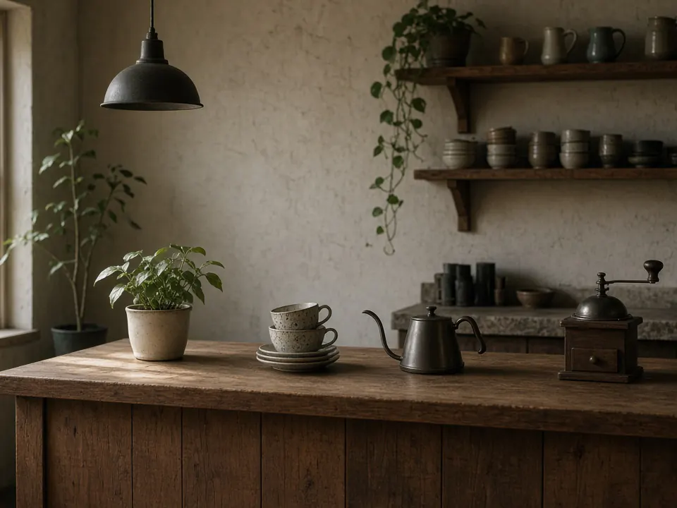

Hotnot served Iced60 THB
Story / 01
About [Your Café Name]
Placeholder
Write two or three sentences about the café here: who runs it, when it opened, and what makes it yours.
Add a note about where the beans come from (which farm or roaster) once that is confirmed.

Highlights
-
/ 01
10
drinks on the menu
-
/ 02
800 – 1,700 m
growing altitudes of Doi Tung and Doi Chaang
-
/ 03
Arabica
grown in Chiang Rai's highlands
-
/ 04
Hot & iced
Italian classics and Thai favourites